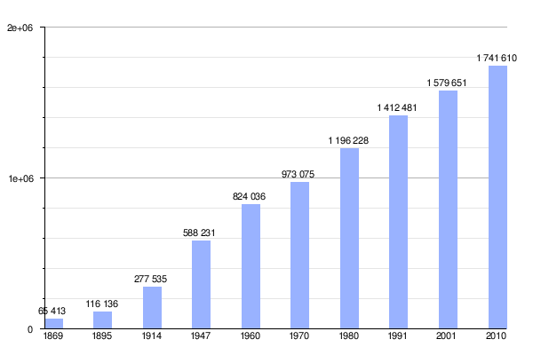

Mendoza es una ciudad del oeste de Argentina y capital de la provincia homónima. Se localiza en la llanura al este de la cordillera de los Andes. Es una de las principales ciudades del país, y con su aglomerado urbano, denominado Gran Mendoza alcanza una población total que supera el millón de habitantes. Su superficie es de 57 km² aunque su área metropolitana se extiende 168 km².
Es un principal polo industrial, un punto estratégico fundamental de las relaciones del Mercosur. La actividad económica está vinculada al comercio, la industria de servicios y principalmente la actividad turística en torno a la industria vitivinícola por lo cual junto con otras ciudades del mundo, es denominada «Capital Internacional del Vino».
Fue una ciudad cosmopolita, debido a la gran cantidad de inmigrantes principalmente italianos y españoles arribados entre el último cuarto del siglo XIX y el primer cuarto del siglo pasado, y aunque ciertas minorías de inmigrantes de otros orígenes, como ser árabes o franceses, se radicaron en aquellos tiempos aquí, la mayoría de los mendocinos, como casi todos los argentinos, proceden de la confluencia de españoles, italianos y aborígenes. En la actualidad hay un número considerable de inmigrantes de países de la región como Bolivia, Chile, Paraguay y Perú. Posee una muy variada oferta cultural y actividad nocturna, es una ciudad turística por excelencia y un destacado centro universitario. Su fisonomía tiene una muy notoria influencia europea, como el resto de Argentina, lo que se nota en los estilos arquitectónicos, también amplias avenidas y calles arboladas.
Como en otras grandes ciudades, su tendencia poblacional es neutra, debido a la falta de territorio para su expansión. A esta situación, se suma que muchas familias de alto poder adquisitivo eligen vivir en barrios fuera del centro de la ciudad, con lo que el incremento poblacional se registra en el resto de los distritos del Gran Mendoza. Considerstyle="margin: top 200px;"ando su área metropolitana, su población aumenta a razón de un 2 % por año, una tasa mayor que Córdoba y Rosario.
A partir de análisis arqueológicos se ha podido determinar que los primeros pobladores de Mendoza llegaron durante el Holoceno.Sin embargo es escaso el material existente de aquellos primeros pobladores como para conocer en profundidad sus costumbres y actividades (ver Cultura de Ansilta). Algunos de los primeros de los que se tiene un registro abundante son los que habitaron el Valle del río Atuel en el 12 300 a. C. dedicándose a la caza y a una agricultura incipiente de maíz, zapallo, quinoa, porotos, etc. Dominaban la cestería y la alfarería en forma rudimentaria. En este valle se desarrolló la Cultura de Agrelo, considerada la antecesora de los Huarpes. En la zona norte de la provincia se desarrolló esta última cultura, quienes fueron a su vez influenciados por el Imperio inca durante el siglo XV. La tradición oral establece la llegada del inca Túpac Yupanqui a Coquimbo alrededor del año 1470.
Entre los ríos Barrancas y Diamante vivían los puelches, recolectores y cazadores, emparentados con los pehuenches. Es de notar que, hasta inicios del siglo XVII los pehuenches étnicamente eran principalmente huarpes que luego se irían mapuchizando. En cuanto a los puelche (gente del este en mapudungun) este etnónimo dado por los mapuche abarcaba en lo que hoy es el sur y sureste de Mendoza a etnias de diversos linajes (principalmente huarpes del sur, guenaken o patagones del norte, e incluso het (antiguos Pampa), todos estos pueblos quedaron mapuchizados desde la segunda mitad del siglo XVIII.
Los primeros españoles que ingresaron en el actual territorio mendocino lo hicieron a las órdenes de Francisco de Villagra, quien fue desde el Perú por la ruta del Tucumán con el objetivo de unirse a Pedro de Valdivia en Chile. Al no poder cruzar los pasos cordilleranos, por encontrarse cerrados por la nieve, Villagra acampó en Huentota en 1551 con 185 hombres y 500 caballos.Allí entabló relaciones con los huarpes y exploró la zona hasta el río Diamante.
El primer asentamiento poblacional se fundó el 2 de marzo de 1561. El capitán Pedro del Castillo fundó la ciudad de «Mendoza del Nuevo Valle de La Rioja» luego transformada en la capital provincial, dándole el nombre del gobernador de Chile, García Hurtado de Mendoza. En un principio la población era de 47 vecinos, de los cuales 30 eran encomenderos encargados de unos 2500 indios.
Otra expedición al mando del capitán Juan Jufré, enviada por Villagra, sucesor de García Hurtado de Mendoza en la gobernación de Chile, trasladó la ciudad a la margen izquierda del río a «dos tiros de arcabuz» al sudoeste, el 28 de marzo de 1562. La ciudad fue rebautizada como «Ciudad de la Resurrección en la Provincia de los Huarpes», pero finalmente perduró su nombre original.
Mendoza formaba parte del corregimiento de Cuyo con cabecera en la propia Ciudad de Mendoza, integrando la Capitanía General de Chile dependiente del Virreinato del Perú.
La conquista inició la desintegración del mundo indígena. El valle central del actual territorio de Mendoza estaba ocupado por diversos grupos de agricultores que antes habían sido dominados por los incas, a quienes los españoles llamaron genéricamente huarpes. Más al sur circulaban grupos cazadores recolectores denominados puelches. Los nativos fueron despojados de sus tierras, trasladados hacia áreas marginales y repartidos en encomiendas entre los vecinos. Aunque la corona prohibió el trabajo indígena, las leyes no se aplicaron en esa frontera marginal del imperio porque la mano de obra indígena constituía la principal riqueza de la región. Los encomenderos traspasaron los beneficios a sus descendientes. En ese lapso obispos y miembros del clero comprometidos con la política de defensa de los naturales intentaron contener su explotación y su traslado a Chile. La disminución de la población indígena provocada por la emigración forzada a Chile y la alta mortalidad de la que fue víctima a raíz de enfermedades introducidas por los europeos justificaron la introducción de africanos esclavos frente a la creciente necesidad de mano de obra. La interacción de los habitantes fue conformando una sociedad étnicamente plural y rígidamente jerarquizadas según las ideas de honor y limpieza de sangre que caracterizaban la cultura española tardiomedieval y moderna.
Con la formación del Virreinato del Río de la Plata en 1776, el Corregimiento de Cuyo fue separado del Virreinato del Perú y de la administración dirigida desde Chile, para ser incorporado al nuevo virreinato con capital en Buenos Aires, con lo que dicha ciudad, con la que ya existía un importante contacto comercial y cultural se convirtió en la encargada de administrar el área. La cordillera de los Andes pasó a ser una frontera política a partir de dicho punto.
La Real Ordenanza de Intendentes del 28 de enero de 1782 dividió el Virreinato del Río de la Plata en ocho gobernaciones-intendencias, además de las gobernaciones militares y políticas de Montevideo y de los pueblos de las antiguas misiones jesuíticas, formándose brevemente la Intendencia de Cuyo. Pero como consecuencia del informe presentado por el virrey Vértiz, esta estructura fue modificada por Real Orden del 29 de julio de 1782 y por la cédula aclaratoria del 5 de agosto de 1785, suprimiéndose las intendencias de Cuyo y Santa Cruz de la Sierra y dividiendo la del Tucumán en dos, integrando Cuyo la nueva Gobernación Intendencia de Córdoba del Tucumán, con sede en Córdoba.
El 2 de abril de 1805 se ordenó la construcción del fuerte San Rafael del Diamante en la actual villa 25 de Mayo.
La Revolución de Mayo de 1810 fue conocida en Mendoza el 6 de junio de ese año,pero los cabildantes vacilaron entre adherirse a la revolución o enviar tropas a Córdoba para sumarse a la contrarrevolución organizada por Rafael de Sobremonte. Finalmente, el entusiasmo popular motivó que el 25 de junio se decidiera acatar a la Primera Junta y enviar el diputado que ésta solicitaba. En un principio se eligió a Bernardo Ortiz, pero tras su fallecimiento fue reemplazado por Manuel Ignacio Molina, quien integró así la Junta Grande.
El 29 de noviembre de 1813 se creó la gobernación intendencia de Cuyo, separándola de la de Córdoba del Tucumán, integrada por las subdelegaciones de San Luis, Mendoza y San Juan. El primer teniente gobernador destinado a Cuyo fue el coronel Florencio Terrada. Posteriormente fue designado Gobernador Intendente el coronel Marcos Balcarce y luego José de San Martín
En el año 1814 José de San Martín decide que en lugar de luchar en el norte, la forma más efectiva de derrotar a los realistas sería formando un ejército en Mendoza para desde allí cruzar los Andes y tomar Chile, y atacar Lima con las naves chilenas. San Martín explicaba que se debía crear
Dicho plan de acción era una variante del Plan de Maitland, que San Martín conoció durante su estadía en Londres.Para llevarlo adelante, San Martín solicita desde Córdoba que se le otorgue la gobernación de Cuyo, a lo cual accede el Director Supremo Gervasio Posadas.
A su llegada, San Martín contó con un apoyo entusiasta de la población mendocina, aunque las relaciones con Buenos Aires se tensaron con la asunción de Carlos María de Alvear en lugar de Posadas. El coronel Gregorio Perdriel es nombrado nuevo gobernador pero es desconocido por el cabildo mendocino, que respalda a San Martín en el cargo.
Al mes de la llegada de San Martín a Mendoza arribó el ejército chileno derrotado en la Batalla de Rancagua, entre los cuales se encontraban José Miguel Carrera y Bernardo O'Higgins, el cual se acopló al Plan Continental.
Por ese entonces se reunía el Congreso de Tucumán, con el propósito de declararse independientes de la monarquía española. San Martín consideraba fundamental para sus planes una rápida declaración de independencia de la Argentina, para lo cual mantenía frecuentes conversaciones con Tomás Godoy Cruz sobre el desarrollo de los acontecimientos. Godoy Cruz era, junto con Juan Agustín Maza, representante de Mendoza en dicho Congreso. El resultado del Congreso dio nuevos bríos a San Martín, que podía entonces realizar la campaña con el respaldo de una nación soberana. San Martín se entrevistó en Córdoba con Juan Martín de Pueyrredón, Director Supremo resultante del Congreso de Tucumán, y que se compromete a brindar a San Martín todo el apoyo necesario.
Para llevar a cabo el Plan Continental y formar al Ejército de los Andes se necesitaba una fuerte reorganización del ejército y el respaldo de un importante desarrollo industrial. Se instaló una fábrica de pólvora, una fundición de artillería para la cual se contrata a 300 obreros, fábricas para los tejidos que componían la vestimenta militar, talleres para las tintas que les daban color, y un laboratorio de explosivos. Para todo esto se contrató mano de obra proveniente de San Luis, San Juan, La Rioja, Corrientes, Córdoba y Buenos Aires; así como también la colaboración de talleres locales y mano de obra voluntaria.
Para financiar la campaña se modificó el régimen tributario provincial, gravando con impuestos los capitales y el consumo de carne. Se alentó la realización de donaciones y se tomaron medidas como la disminución de los sueldos de determinados sectores.
Para el reclutamiento se montó un campamento en Las Heras, en un paraje conocido como El Plumerillo. Se despejó un área para maniobras, y se construyó un tapial para la práctica de tiro. Los soldados recibieron una cuidadosa instrucción por parte de San Martín.
Así se formó al Ejército de los Andes, compuesto por más de doscientos oficiales, cuatro mil soldados y mil combatientes auxiliares. También se contaba con mil quinientos caballos, diez mil mulas y dieciocho piezas de artillería.
Por la región de Quebrada Santa Elena y Paramillos de Uspallata atravesaron las columnas del Ejército de Los Andes, iniciando la epopeya libertadora del sur del continente. En 1817, una de las columnas principales del Ejército del General San Martín, emprendió la gesta libertadora al mando del General Juan Gregorio de Las Heras, quien se dirigió a Chile por el camino de Uspallata. Otra columna, partió el 19 de enero de 1817 al mando del Capitán Fray Luis Beltrán al frente de la Maestranza y el parque que portaba los pertrechos de guerra, subió por la Quebrada del Toro y se dirigió hacia Uspallata, a través de Paramillos de Uspallata para reunirse con la columna principal del General Gregorio de Las Heras.
Además de organizar la industria y el comercio para la conformación del ejército de los Andes, San Martín impulsó la enseñanza patriótica en las escuelas, fundó la primera biblioteca mendocina e impartió medidas para mejorar la urbanización. También fomentó la agricultura y generalizó la aplicación de la vacuna antivariólica.
El 9 de enero de 1820 se sublevó en San Juan el regimiento de Cazadores de los Andes. Toribio de Luzuriaga, reemplazante de San Martín en el gobierno tras su partida a la campaña militar, presenta su renuncia al Cabildo de Mendoza el 17 de enero. Así reasume el poder en calidad de Cabildo-Gobernador de la Provincia de Cuyo, pero solo tuvo poder en el municipio de Mendoza. Al poco tiempo, el 1 de marzo de 1820 se disuelve el gobierno de Cuyo, del cual se desprenden Mendoza, San Luis y San Juan.
El 3 de julio de 1820 un Cabildo abierto elige gobernador a Tomás Godoy Cruz, amigo de San Martín. Durante su gobierno se proyecta reunir nuevamente a las ciudades cuyanas formando la unión de los Pueblos Libres de Cuyo. El 4 de mayo de 1821 los Cabildos de las tres ciudades aceptan un reglamento. Pero este no entrará en vigencia porque el 12 de octubre el gobierno de Mendoza notifica a San Juan y San Luis "que por ahora no podría realizarse el plan de unión". En 1822 hubo otro intento de reunión, pero tampoco prosperó.
En 1846 el capitán Juan Troncoso erigió al Fuerte de Malargüe o de Malal-Hué y al año siguiente el comandante J. Antonio Rodríguez fundó la villa El Milagro.
La Constitución Nacional en 1853 fue aceptada de inmediato por Mendoza. Tras su sanción la provincia sancionó su constitución provincial, aprobada el 14 de diciembre de 1854, siendo la primera provincia argentina en hacerlo. Esta constitución reconocía solo cinco departamentos: San Vicente (que pasó a llamarse Belgrano en 1889 y a partir de 1909 se denomina Godoy Cruz), San Martín, San Carlos, La Paz y la Capital de la provincia. En 1855 se creó el departamento de Luján de Cuyo, mientras que en 1858 quedaron constituidos los departamentos de Maipú y Guaymallén y el departamento de San Carlos se dividió en dos: Tupungato y Tunuyán, el cual abarcaba el actual departamento de San Carlos. El Departamento de San Martín fue dividido en dos en 1859, creándose con su parte sur el Departamento de Junín. Se creó además ese año el Departamento de Tulumaya, renombrado en 1889 como Lavalle.
La ciudad de Mendoza fue destruida por el terremoto de 1861, el cual destruyó al Cabildo, la Basílica de San Francisco y unas 2000 casas y dejó un saldo de entre 6000 y 10 000 muertos (la población de entonces rondaba alrededor de los 20 000 habitantes). La ciudad se reconstruyó un kilómetro al sudoeste, con un diseño pensado por el agrimensor Julio Balloffet, para minimizar los efectos de un posible temblor y facilitar la evacuación en caso de ser necesario.
En 1871 se fundó el departamento Las Heras. En 1874, por medio de una ley, los departamentos pasaron a ser gobernados por un subdelegado, designado por el gobernador. En 1866 el gobernador Rufino Ortega funda la villa de Malargüe, en tierras bajo control indígena y disputadas por el estado nacional. El 17 de mayo de 1887, cambia su nombre por el de Coronel Luis Beltrán, pero en 1892 fue disuelta e incorporada como distrito del Departamento 25 de Mayo.
Después de la denominada Conquista del Desierto, en 1880 fue incorporado a la administración provincial efectiva el sur de la provincia. En ese año, el Departamento Tunuyán pasó a denominarse Departamento San Carlos, se dividió el Departamento Tupungato en dos, y se denominó Tunuyán a la porción sur y Tupungato a la norte.
En 1884, se separó del Departamento Junín el nuevo Departamento Rivadavia. Además, se creó el Departamento Santa Rosa. El Departamento San Rafael fue establecido en 1903 y el Departamento General Alvear, en 1914. En 1950, finalmente, se crea el Departamento Malargüe, con carácter de tal y jurisdicción propia.
Por la Ley provincial N.º 3455 del 4 de noviembre de 1966, la Legislatura provincial aprobó el Acuerdo Interprovincial de Límites con la provincia de San Juan, suscripto el 25 de junio de ese año, por lo que quedó delimitada toda la frontera entre ambas provincias. El límite fue fijado mediante la Ley Nacional N.º 22 200 dictada por el gobierno militar y publicada en el Boletín Oficial el 27 de marzo de 1980.
El terrorismo de Estado en Argentina en las décadas de 1970 y 1980 asoló a la provincia de Mendoza. Previamente al inicio del Proceso de Reorganización Nacional dos organizaciones protagonizaron los preliminares: el Comando Moralizador Pío XII y el Comando Anticomunista de Mendoza.
Durante la última dictadura Mendoza quedó encuadrada en la Área 331 (3/31/331) de la Subzona 33 (3/33) de la Zona 3.1718 El Comando de la VIII Brigada de Infantería de Montaña del III Cuerpo de Ejército asumió la conducción de esa subzona.1817
El principal centro clandestino de detención y exterminio fue el D-2 o Palacio Policial, ubicado en la capital.
La provincia de Mendoza es, al igual que las demás provincias argentinas, autónoma respecto del gobierno nacional en la mayoría de los temas, exceptuando aquellos de alcance federal. Esto está reconocido por el artículo 121 de la Constitución de la Nación Argentina:
La Constitución provincial fue aprobada el 11 de febrero de 1916, sufriendo varias modificaciones a lo largo de la historia, la última en 1997.21
El poder ejecutivo es unipersonal y recae en un ciudadano elegido directamente por la población de la provincia para el cargo de gobernador. Es el encargado de ejecutar las leyes y administrar el presupuesto provincial, con la colaboración de su gabinete de ministros. Es electo junto al vicegobernador, que a su vez es presidente de la Cámara de Senadores Provinciales. Del Ejecutivo dependen la Policía de Mendoza.
La Constitución de la Provincia establece un período de gobierno de cuatro años, y no permite la reelección del gobernador sin dejar pasar un período intermedio. Dicha restricción se extiende a los parientes hasta el segundo grado de consanguinidad.
El poder legislativo es bicameral, contando con una Cámara de Senadores, integrada por 38 miembros y presidida por el Vicegobernador de la Provincia y otra de Diputados, integrada por 48 representantes. Ambas cámaras funcionan en el edificio de la Legislatura Provincial situada en la Ciudad de Mendoza, en Peatonal Sarmiento y calle Patricias Mendocinas, y se encargan de sancionar las leyes provinciales.
La Cámara de Diputados posee representantes de cada sección electoral de forma proporcional a su población, no pudiendo exceder un total de 50 diputados y con un mínimo de ocho por sección electoral.Los diputados duran 4 años en sus cargos y son reelegibles, con renovaciones de la Cámara por mitades cada 2 años.Dicha cámara tiene la prerrogativa de presentar los proyectos de ley referidos a impuestos y presupuesto.
La Cámara de Senadores se compone también de representantes de cada sección electoral en función de su población, con un mínimo de 6 por sección y un máximo total de 40 senadores. Los senadores duran 4 años en sus cargos y son reelegibles, con renovaciones de la Cámara por mitades cada 2 años. En el Senado se realizan los juicios políticos que se inician con denuncias de la Cámara de Diputados, así como también se aceptan o rechazan los nombramientos de jueces o demás funcionarios que así lo requieran. Por otro lado la provincia tiene representación en el Congreso Nacional con sus diputados y senadores, elegidos en elecciones directas. La cantidad de Diputados Nacionales en Argentina depende de la población de cada provincia a la que representan y la de Senadores es fija. Los principales partidos políticos de la actualidad son la Unión Cívica Radical, el Partido Justicialista y el Partido Demócrata. Mendoza cuenta con tres Senadores Nacionales y diez Diputados Nacionales.
| Seccion Electoral | Departamentos | Diputados | Senadores |
|---|---|---|---|
| 1 |
Capital Guaymallen Las Heras Lavalle |
16 | 12 |
| 2 |
Junìn La Paz Maipu Rivadavia Santa Rosa Sam Martin |
12 | 10 |
| 3 |
Godoy Cruz Lujan de cuyo San Carlos Tunuyan Tupungato |
10 | 8 |
| 4 |
General Alvear Malargue San Rafael |
10 | 8 |
| Total | 48 | 38 |
El poder judicial es ejercido por una Suprema Corte, cámaras de apelaciones, jueces de primera instancia y demás juzgados, tribunales y funcionarios inferiores creados por ley. La Suprema Corte se compone de 7 integrantes, y es la máxima autoridad judicial de la provincia. Una Ley Orgánica de Tribunales determina la ubicación, número, jurisdicción y competencia de los tribunales. Los miembros de la suprema corte de justicia y su procurador general son propuestos por el Poder Ejecutivo y aceptados o rechazados por el senado; mientras que los jueces de los tribunales inferiores son propuestos por el Consejo de la Magistratura al Poder Ejecutivo, y este a su vez los propone al senado. Dichos funcionarios son inamovibles en sus cargos mientras dure su buena conducta, solo pudiendo ser destituidos mediante la celebración de un juicio político.
Cuenta con gran variedad de mamíferos. Entre los carnívoros pueden mencionarse el zorro —tanto gris como colorado—, zorrinos, hurones, pumas y comadrejas. Cuenta además con gran variedad de mamíferos carnívoros y avícolas que se refugian en cuevas durante el día, especialmente pumas o leones de montaña. Hay ejemplares cavícolas que se refugian durante el día en cuevas, como el pichiciego mendocino. En el distrito andino se ven cóndores (foto) y en el subandino aves de rapiña: águilas y gavilanes, a lo que se suman roedores como ratones y cuises, búhos, pecho colorado, pititorras y distintos tipos de ofidios e insectos. Hacia el sur se visualizan zorrinos, vizcachas, guanacos (foto), perdices, ñandúes, y aves como cardenales y cotorritas. También habitan la región aves acuáticas, como el cisne de cuello negro, la garza y los flamencos. Asimismo el ñandú y ñandú petiso, que es una especie de ave terrestre, típica de zona montañosa.
Mendoza presenta tres estructuras diferenciadas: las montañas andinas al oeste, las planicies hacia el este, y mesetas, sierras y volcanes en el sur. La cordillera condiciona casi toda la geografía de Mendoza, cuyo territorio se encuentra prácticamente en su totalidad situado a más de 1000 metros sobre el nivel del mar.
La zona montañosa ocupa la mitad oeste de la provincia, y en ella la cordillera de los Andes alcanza sus alturas más importantes. Dicha zona se divide en 3 subunidades separadas entre sí por valles longitudinales y transversales:
La Cordillera Principal, de origen en el movimiento Cuaternario, es divisoria de aguas, hace de límite con Chile y su ancho disminuye progresivamente de norte a sur, así como la altura de sus picos, pasos cordilleranos y nieves eternas y glaciares disminuyen en altura. Aquí se encuentra el Aconcagua, de 6960,8 m s. n. m., el pico más alto del mundo fuera del «Sistema de los Himalayas». Otros cerros de gran magnitud son el Juncal, de 6180 m s. n. m.; el de la Pollera, de 6235 m s. n. m., y el Tupungato, que alcanza los 6570 m s. n. m. en el límite internacional con Chile.
La Cordillera Frontal, discurre al este de la Principal desde el límite con San Juan hasta el río Diamante. Es un macizo rejuvenecido por la orogenia andina, constituido por varios bloques con altitudes de entre 5000 y 6000 m s. n. m.: el cordón del Tigre, el cordón del Plata, del Portillo, de Santa Clara, de las Llaretas y del Carrizalito.
La Precordillera, de origen en el movimiento Primario, separada de la Cordillera Frontal por el valle de Uspallata se extiende en forma continua desde el límite con San Juan hasta el río Mendoza y al sur de este en forma de bloques aislados. Su altura máxima es el cerro Pelado de 3452 m s. n. m..
Las planicies del este o Travesías Cuyanas son llanuras áridas, de vegetación xerófila y con zonas de medanales. Por ella discurren los ríos Mendoza, Tunuyán, Diamante y Atuel, aprovechados para regadío en los oasis Norte y Sur. Presenta una leve pendiente hacia el río Desaguadero. En su extremo noroeste se encuentran las Cerrilladas Pedemontanas, las cuales separan la planicie de valles como el de Uco y debido a que están muy erosionadas adoptan formas de cuchillas (como en Tupungato), de lomas (como en Lunlunta) o de Huayquerías (como en San Carlos y Rivadavia); en su extremo suroeste se alzan varios cerros isla, y las primeras estribaciones de la sierra del Nevado.
En el sur de la provincia el relieve es más complejo, y presenta características morfológicas propias de la Patagonia. La planicie del este se continúa en la Depresión de Llancanelo, cuenca lacustre ocupada en su centro por los bañados y salinas de la laguna de Llancanelo. La depresión está rodeada por la cordillera en el oeste, por sierras aisladas como el Bloque de San Rafael (cortado en dos por el cañón del Atuel) por el norte, por la sierra del Nevado por el este y por la altiplanicie de la Payunia por el sur, una meseta basáltica, esteparia y cubierta por escoriales, con más de 800 volcanes aislados donde sobresale el Payún Matrú de 3860 m s. n. m. y en su extremo sur las sierras de Reyes, de los Cara Cura y Chachahuén.
El clima, en Mendoza, en las partes más bajas, es continental semiárido, con veranos muy secos e inviernos más húmedos. La temperatura media para enero (verano) es de 24 °C, con 30 °C en el día y 18 °C en la noche, mientras la temperatura media para julio (invierno) es de 6 °C, con 12 °C en el día y 0 °C en la noche, para la capital, con 750 metros de altitud. Las precipitaciones medias anuales son de 200 mm y la temperatura media anual es de 16 °C.
En las montañas y el piedemonte se producen nevadas todos los inviernos; y más cerca del llano se precipita la lluvia en forma de granizo. Un estudio realizado en 1995 por expertos de Israel, EE. UU. y Bulgaria determinó que Mendoza es una de las regiones del mundo en donde el granizo es más peligroso, con un promedio anual de 25 tormentas con porcentuales de daños que van del 4,30 al 29,55 por ciento. En 1984 se creó la Dirección de Investigaciones de Lucha Antigranizo, destinada a investigar e implementar técnicas para prevenir la formación del granizo o minimizar sus efectos, empleando por ejemplo cañones granífugos. Diversos políticos consideran que el balance de dicha actividad fue positivo, pero que podría haber tenido mejores resultados de haber tenido un mejor financiamiento y continuidad.
La orientación norte-sur de la cordillera no impide el avance del aire tropical ni del polar, lo cual en conjunción con la altura propicia las condiciones para el desarrollo del viento Zonda. La altura y el ancho de la cordillera condensan la mayor parte de la humedad proveniente del Océano Pacífico al oeste, del lado correspondiente a Chile, por lo cual la cordillera se comporta como una barrera climática. El áspero relieve del oeste mendocino, en los cordones montañosos de la cordillera principal, determina la poca humedad del ambiente. Los vientos del Pacífico, se elevan y pasan los Andes, donde pierden la humedad; atraviesan la cordillera vientos fríos y secos.
El viento que en Cuyo se conoce como Zonda, se origina en el océano Pacífico sur, y al atravesar la cordillera, pierde su humedad en los faldeos cordilleranos de Chile, pasando como viento seco a las provincias andinas. Al descender, en el Baldeo oriental de la cordillera, se va calentando, hasta llegar a la región como un viento cálido, seco, sofocante, con temperaturas que pueden superar los 40 °C. El viento Zonda se manifiesta con mayor intensidad en los meses de agosto y septiembre. Los vientos del Atlántico, debido a la distancia con la región, tienen una acción perceptible en el verano. Su acción origina las características tormentas del desierto, torrenciales, concentradas en espacio y tiempo, que se producen principalmente en el período diciembre-febrero.
Mendoza presenta una extrema aridez, en donde influye la escasez de precipitaciones y una gran amplitud térmica diaria y estacional. Esta aridez se encuentra interrumpida por los oasis cuyanos, formados a orillas de los ríos que nacen en los glaciares cordilleranos.
La vegetación xerófila y la ausencia de árboles son elementos frecuentes en el paisaje mendocino silvestre; la que puede observarse particularmente - donde ha sido muy estudiada - en la turística zona de Paramillos de Uspallata. Por otra parte, la vegetación implantada está constituida por árboles frutales, álamos, moreras, fresnos, plátanos, arces y vides. Los mismos se encuentran en todos los oasis de la provincia irrigados por las típicas acequias y canales de riego.
La flora: Encontramos distintas regiones; en la región andina, paralela a la cordillera, se encuentran plantas gramíneas y arbustos como la ortiga de la sierra, yerbas del guanaco y palán. La zona subandina y provincia del monte, al este de la anterior, es muy extensa y abarca el piedemonte, la planicie y la región de las Huayquerías. La característica de esta área es la vegetación arbustiva como jarilla en sus distintas variedades, el piquillín, espinillos, garabatos y penca. Hacia el este se observan molles, retamos y chañares, y al noreste algarrobos y caldenes. En las quebradas por donde fluyen los ríos se desarrolla una vegetación mucho más variada y rica que la región del monte. En el sur mendocino, que incluye toda la zona de la Payunia, predomina la estepa arbustiva y se observan juncos y gramíneas, chilcas, jume y otros. En la región cordillerana se encuentran plantas gramíneas y arbustos de hojas apretadas, que le permiten resistir las bajas temperaturas. Hacia la llanura encontramos árboles de hasta 20 metros de altura, con predominio de vegetación arbustiva. Hacia el sur se encuentran pastos y arbustos característicos de zonas esteparias y hacia el este prevalecen los espinales
Entre los ríos más importantes se encuentran el Desaguadero y el Mendoza (principal afluente del anterior), Tunuyán, Diamante y Atuel. Todos ellos nacen en la cordillera y atraviesan la provincia en dirección oeste-este, formando parte de lo que se denomina sistema hidrográfico andino o sistema del Desaguadero, y es aprovechado para el riego (para agricultura) y la generación de electricidad por medio de varios diques. También constituyen gran parte del atractivo turístico de la provincia por el eco-turismo y la pesca.
La sismicidad del área de Cuyo (centro oeste de Argentina) es frecuente y de intensidad muy alta, con un silencio sísmico de terremotos medios a graves cada 20 años.
Sismo de 1861: aunque dicha actividad geológica catastrófica ocurre desde épocas prehistóricas, el terremoto del 20 de marzo de 1861 (161 años), con 12 000 muertes, señaló un hito importante dentro de la historia de eventos sísmicos argentinos ya que fue el más fuerte registrado y documentado en el país. A partir del mismo los sucesivos gobiernos mendocinos y municipales han ido extremando cuidados y restringiendo los códigos de construcción. Con el terremoto de San Juan del 15 de enero de 1944 (78 años) los gobiernos tomaron estado de la enorme gravedad crónica de sismos de la región.
Sismo de 1920: de 6,8 de intensidad, destruyó parte de sus edificaciones y abrió numerosas grietas en la zona. Hubo 250 muertes por destrucción de casas de adobe
Sismo del sur de Mendoza de 1929: muy grave, y al no haber desarrollado ninguna medida preventiva, a pesar de haber transcurrido solo nueve años del anterior, mató a 30 habitantes por la caída de casas de adobe35
Sismo de 1985: fue otro episodio grave,37 de 9 s de duración, derrumbando el viejo Hospital del Carmen de Godoy Cruz.
Entre las lagunas más destacadas se encuentran las Llancanelo, de Guanacache, Negra y Los Horcones.
Los lagos y lagunas constituyen áreas protegidas por la flora y fauna que existen a sus alrededores y su valor histórico ya que en esas zonas se instalaron las principales tribus indígenas de la zona.
Entre las lagunas más destacadas se encuentran las Llancanelo, de Guanacache, Negra y Los Horcones.
Los lagos y lagunas constituyen áreas protegidas por la flora y fauna que existen a sus alrededores y su valor histórico ya que en esas zonas se instalaron las principales tribus indígenas de la zona.
Los embalses de la provincia son:
Embalse Agua del Toro: Ubicado en 34°35'S, 69°05'O, a 1240 m s. n. m., y 200 km al sur de la ciudad de Mendoza.
Represa Los Reyunos:forma un lago que lleva su mismo nombre, cerca de la ciudad de 25 de Mayo.
Embalse El Nihuil: Ubicado en 35°04'S, 68°45'O; a 1325 m s. n. m., en dirección sur respecto del Embalse Agua del Toro, y en la región próxima a la ciudad de San Rafael.
Embalse Valle Grande: sobre la Ruta Provincial 173, próximo a la ciudad de San Rafael
Los diques de la provincia son:
Dique Potrerillos
Dique Las Compuertas
Dique Cipolletti
Diquie Valle de Uco
Dique El Carrizal: en el curso medio superior del río Tunuyán. Ubicado en 33°18'0″S 68°43'15″O, a 785,5 m s. n. m., y próximo a la ciudad de Rivadavia.
Dique Gobernador Benegas
Dique Phillips
Dique Galileo Vitale o 25 de Mayo: a 27 km de la ciudad de San Rafael
La provincia de Mendoza cuenta con 17 reservas naturales que conforman la Red de Áreas Naturales Protegidas de Mendoza, gestionadas por la Dirección de Recursos Naturales Renovables, que comprenden aproximadamente el 13 % de la superficie de la provincia.
Reserva natural Caverna de las Brujas (departamento Malargüe)
Reserva cultural y paisajística El Manzano Histórico (departamento Tunuyán)
Reserva natural Castillos de Pincheira (departamento Malargüe)
Reserva natural Laguna Las Salinas (departamento San Rafael)
Reserva natural Bosques Telteca (departamento Lavalle)
Reserva natural Laguna del Diamante (departamento San Carlos)
Reserva forestal Ñacuñán (departamento Santa Rosa)
Reserva natural Humedal Llancanelo (departamento Malargüe)
Parque provincial Volcán Tupungato (departamentos Tupungato y Luján de Cuyo)
Reserva natural La Payunia (departamento Malargüe)
Parque provincial Aconcagua (departamento Las Heras)
Reserva natural Divisadero Largo (departamento Las Heras)
Monumento natural Puente del Inca (departamento Las Heras)
Parque provincial Cordón del Plata (departamentos Luján de Cuyo, y Tupungato)
Reserva Manzano-Portillo de Piuquenes (departamentos de Tunuyán, San Carlos, y Tupungato)
Reserva hídrica natural Laguna del Atuel (departamento San Rafael)
Casuchas del Rey (departamento Luján de Cuyo)
Reserva Científica Parque Científico Provincial Municipal Observación Espacio Malargüe (departamento de Malargüe)
Por convenio con empresas privadas existen también reservas naturales voluntarias:
Reserva privada Villavicencio (departamento Las Heras)
Reserva Sierra Pintada (departamento San Rafael)
Reserva privada El Sosneado (departamento San Rafael)
Sitios con declaración internacional:
Sitio Ramsar Lagunas de Guanacache, Desaguadero y del Bebedero (departamentos Lavalle y La Paz)
Sitio Ramsar Laguna de Llancanelo (departamento Malargüe)
Sitio Ramsar Villavicencio (departamento Las Heras)
Reserva de biosfera de Ñacuñán (departamento Santa Rosa)
La provincia se encuentra dividida en 18 departamentos, que en Mendoza (a diferencia de la mayoría de las provincias argentinas) equivalen a los municipios. A su vez cada departamento se encuentra dividido en distritos, excepto Capital que se divide en secciones.
Gran Mendoza es una aglomeración urbana consecuencia de la extensión de la ciudad de Mendoza —ubicada en el Departamento Capital— por sobre los departamentos limítrofes y los departamentos de Las Heras, Guaymallén, Godoy Cruz, Luján de Cuyo y Maipú.
El 22 de enero de 1988 los gobernadores de las provincias de La Rioja, Mendoza, San Juan y San Luis firmaron el Tratado de Integración Económica del Nuevo Cuyo. El proceso de regionalización en la República Argentina está basado en el artículo 124 de la Constitución de la Nación Argentina.
El Tratado de Integración Económica del Nuevo Cuyo dio forma a la región para «fortalecer la integración de la Región mejorando los medios de comunicación y transporte, promoviendo la oferta de bienes y servicios regionales, tanto en el plano nacional como internacional y la ejecución de emprendimientos productivos y comerciales con otros países, especialmente los latinoamericanos».
Como órgano de gobierno de la región se constituyó la Asamblea de Gobernadores, que es la instancia máxima de decisión para este Acuerdo Interjurisdiccional en lo que respecta a la fijación de pautas para la integración y definición de políticas.
Existe también un Comité Ejecutivo integrado por los ministros de Economía de San Juan y Mendoza y ministros de Hacienda y Obras Públicas de La Rioja y San Luis, quienes tendrán a su cargo la formulación de las diferentes propuestas para la toma de decisión y las tareas operativas de su implementación.
Padrón 1778: 8765 hab.
Estimación 1820: 35 000-40 000 hab.
Estimación 1847: 45 000 hab.
Estimación 1853: 60 000 hab.
Censo 1869: 65.413 hab.
Censo 1895: 116 136 hab.
Censo 1914: 277 535 hab.
Censo 1947: 588 231 hab.
Censo 1960: 824 036 hab.
Censo 1970: 973 075 hab.
Censo 1980: 1 196 228 hab.
Censo 1991: 1 412 481 hab.
Censo 2001: 1 579 651 hab.
Censo 2010: 1 741 610 hab.
Según la estimación del INDEC para junio de 2009 la población sería alrededor de 1 747 801 habitantes.De estos, 846 904 se encuentran en la aglomeración urbana del Gran Mendoza, conformada por la ciudad de Mendoza y las localidades lindantes. Es la cuarta aglomeración urbana más importante del país, por detrás del Gran Buenos Aires, el Gran Córdoba y el Gran Rosario. Sin embargo, en el transcurso de los censos de 1991 y 2001, viene notándose un estancamiento progresivo del crecimiento poblacional de la provincia. Finalmente el censo nacional 2010 estableció una población de 1 741 610 habitantes, de los cuales 1 406 283 habitan áreas urbanas y 332 648 en áreas rurales.
En 2007, la provincia registró 33 000 nacidos vivos, observándose una tasa bruta de natalidad del 19,3 ‰. Las defunciones fueron 12 297, con una tasa bruta de mortalidad del 7,2 ‰. Como resultado se vislumbra un moderado crecimiento vegetativo de 12,1 ‰ (o 1,21 %).La mortalidad infantil fue del 11,3 ‰ en 2007 con 372 defunciones, indicador inferior a la tasa nacional de 13,3 ‰. La mortalidad materna muestra en el año 2007 una tasa de 0,39 ‰.
La estructura económica de Mendoza se caracteriza por la producción e industrialización de productos agrícolas. La abundante cosecha de vid, frutas y hortalizas dio origen a una importante industria vitivinícola y de producción de conservas. En el año 2016 la provincia generó un producto interno bruto (PIB) de aproximadamente 18 631 millones de dólares, lo que representa el 3,7 % del PIB total de Argentina.
La principal actividad es la vitivinicultura, siendo la provincia más importante en la producción de Vinos Argentinos. Según el Instituto Nacional de Vitivinicultura, el cultivo de la vid en Mendoza ocupa el 68,36 % del total de la región centro-oeste, la cual representa el 94,13 % del total de la producción nacional de vides.63 La mitad de las explotaciones agrícolas mendocinas corresponden a dicha rama. Mendoza desarrolla esta actividad desde 1598, y se vio muy favorecida con la llegada del ferrocarril en 1885. En 1887 la provincia tenía 2000 hectáreas de viñedos. El sector primario tiene una fuerte tradición en esta provincia. Siguiendo en esto a ciudades como Florencia, Bordeaux, Bilbao-Rioja, Porto, Melbourne y Ciudad del Cabo, Mendoza ha sido seleccionada por la Great Wine Capitals Global Network como una de las principales regiones mundiales en materia de producción de vinos.
A pesar de esto, Mendoza comenzó como provincia olivícola. Dicha producción disminuyó su importancia con el tiempo por las características biológicas de dicho cultivo (que, por ejemplo, alcanza su madurez a los 8 años de plantado) y la ecología del lugar, que afectaron la estabilidad de la producción. Se procuró combinar ambos cultivos, pero dicha combinación no fue rentable. Pero incluso a pesar del retroceso de la actividad, Mendoza lidera la producción argentina de olivo, con un 52 % del total nacional.
A principios de siglo comenzaron a realizarse cultivos hortícolas, para abandonar el monocultivo de la vid. Las principales zonas hortícolas son los oasis meridionales, la cuenca media del río Tunuyán y las zonas aledañas a la capital. El principal producto hortícola de Mendoza es el tomate, en sus variedades San Marzano y Roma, seguido por la papa y la cebolla.
En el orden de la fruticultura Mendoza es la primera productora nacional de cerezas, guindas, damascos, ciruelas, membrillos y nueces, y la segunda de duraznos, manzanas y peras.
La ganadería ocupa un sector en crecimiento en la provincia, principalmente en la zona de secano este y sur, se produce ganado bovino y caprino.
Entre los minerales metalíferos se destaca la producción de uranio, que comienza a sobrepasar a la del hierro y el manganeso. Las extracciones no metalíferas más importantes son las talco y bentonita, mientras que entre las rocas de aplicación se encuentran el ripio, la arena, la caliza y el yeso.
Las minas más antiguas conocidas son las de Paramillos de Uspallata —de plomo, plata y zinc— descubiertas en 1683. Sus ruinas se conservan en la actualidad, las que son visitadas por numerosos turistas.
La principal veta minera de Mendoza es el petróleo, cuyas regalías representan casi el 90 % del sector minas y canteras del Producto Bruto mendocino. La provincia produce cerca del 14,1 % del total del país. El petróleo se extrae principalmente de Vizcacheras, La Ventana y Barrancas, seguidas por Malargüe y Tupungato.
Entre las principales actividades industriales de Mendoza se encuentran la extracción y procesamiento del petróleo, la elaboración de bebidas —especialmente vinos—, la actividad metalmecánica, la agroindustria, etc. La extracción y procesamiento del petróleo y las industrias relacionadas con los alimentos y bebidas aportan más del 85 % del Valor de Producción y son la fuente de más de las tres cuartas partes de las fuentes de empleo industriales en la provincia.La actividad industrial tuvo una fuerte caída durante el año 2002, de la cual se recuperó en los años posteriores.
A pesar de su preponderancia, las actividades petroleras disminuyeron su actividad en los últimos años, al tiempo que se produjo un aumento en la fabricación de muebles, maderas y trabajos con metales.La mayor parte de las industrias mendocinas están situadas geográficamente en el Gran Mendoza. IMPSA y Cartelone Construcciones son algunas de las industrias mendocinas más importantes.
La provincia de Mendoza es uno de los principales centros turísticos de Argentina, tanto nacional como internacional. Como se describió con anterioridad, es una de las principales capitales vitivinícolas del mundo, y atrae numerosos turistas que recorren los circuitos de viñedos y bodegas.Hay sitios de interés histórico, en su mayoría relacionados con José de San Martín y el Ejército de los Andes, destacándose el Cerro de la Gloria, las rutas sanmartinianas y los caminos del vino.
La Cordillera de los Andes atrae a numerosos turistas, argentinos y extranjeros, interesados en ver los paisajes montañosos, las actividades deportivas como el andinismo, el ráfting o el esquí, o que desean tomar contacto con la nieve. Uno de los parajes turísticos más visitados —tanto por su cercanía, como por su belleza— es el circuito de Paramillos de Uspallata, que por la Ruta Provincial N.º 52 —que nace en el departamento Las Heras— une la ciudad de Mendoza con la localidad de Uspallata, recorriendo numerosos lugares de interés histórico, cultural, geológico, panorámico, etc. (Canota, el antiguo Gran Hotel Villavicencio, camino de ascenso «de las 365 curvas», la formación geológica denominada «El Balcón», la «Cruz de Paramillos», «Bosque de araucarias de Darwin», ruinas de las minas de Paramillos y Cerro Tunduqueral, entre otros). Similar interés despierta el Cañón del Atuel —que recorre la margen del río de igual nombre—, ubicado en el departamento San Rafael. Otro paraje turístico muy atractivo - conocido internacionalmente - es el Valle de Las Leñas, situado a 400 km de la ciudad de Mendoza, en el departamento Malargüe. Cuenta con 33 pistas de esquí, hoteles de cuatro y cinco estrellas, casino y numerosos servicios. Se realizan trayectos para conocer el cerro Aconcagua y el Cristo Redentor de los Andes.
En la periferia de la ciudad de Mendoza se encuentra el Parque General San Martín.
También cuenta con numerosos sitios para acampar en cámpines agrestes, organizados o disfrutando una experiencia de Glamping o camping de lujo. A principios de marzo de cada año se festeja la Fiesta Nacional de la Vendimia, donde se elige la Reina Nacional, coronándose en una fiesta de luces, sonidos y fuegos artificiales, con carruajes en las calles principales y fiesta central en el anfiteatro Frank Romeo Day. Durante febrero se realiza en cada departamento de la provincia la elección de las candidatas departamentales a Reina Nacional con importantes espectáculos en cada ocasión. Por otra parte se desarrollan varias fiestas folclóricas con reconocidos intérpretes musicales, comidas típicas y ventas de productos regionales, como la Fiesta Provincial del Turismo en San Rafael en octubre, Fiesta Nacional de la Tonada en Tunuyán, Rivadavia le canta al país, Fiesta de la Cueca y el Durazno, Fiesta del chivo en Malargüe en enero (verano), en General Alvear se realiza la Fiesta Nacional de la Ganadería de Zonas Áridas en mayo, Encuentro Nacional de Danza y Canto en enero, etc.
La ciudad de Mendoza está a 1079 km de Buenos Aires por la Ruta Nacional 7, que.la atraviesa de este a oeste. Del mismo modo, la ciudad de San Rafael está a 982 km de Buenos Aires. La Ruta Nacional 40 cruza Mendoza de sur a norte.
Mendoza posee tres aeropuertos: el Aeropuerto Internacional Gobernador Francisco Gabrielli en El Plumerillo, el Aeropuerto Internacional Suboficial Ayudante Santiago Germano en San Rafael y el Aeropuerto Comodoro Ricardo Salomón en Malargüe.
El sistema del transporte público de Mendoza incluyen micro ómnibus, remises y taxis. Ya está en funcionamiento el Metrotranvía de Mendoza, un tren urbano que une los departamentos de Las Heras, Mendoza, Godoy Cruz, Luján de Cuyo y Maipú.
Cuenta con una terminal de ómnibus ubicada en el centro de la ciudad y conocida como Terminal del Sol.
Posiblemente el mayor evento cultural de la provincia sea la Fiesta Nacional de la Vendimia, realizada por primera vez en 1935, en la misma se celebra la uva transformada en vino a través del esfuerzo que los viñateros llevan a cabo en las viñas soportando inclemencias climáticas y diversos factores culturales, políticos y socio-económicos a lo largo de un año, como así también el de los especialistas que trabajan en las bodegas y laboratorios y que contribuyen significativamente en el proceso de fabricación. Se celebra anualmente entre el último domingo de febrero y el primer sábado de marzo. En el año 2011, la National Geographic Society nombró a la Fiesta de la Vendimia como la segunda fiesta de la cosecha más importante del mundo, detrás del Día de Acción de Gracias celebrado en los Estados Unidos, y es considerada por sus desfiles tanto de la «Vía blanca» como del «Carrusel», una de las cinco festividades más importantes y populares del planeta, junto al Carnaval de Río de Janeiro y al Carnaval de Venecia, entre otros.
En el ámbito de la literatura, en el siglo XIX se destacó el poeta Juan Gualberto Godoy, autor popular que se inspiró en pulperos y payadores. Entre los autores modernos se destacan los poetas Alfredo Bufano y Jorge Enrique Ramponi. En el ámbito narrativo se destacan las obras de Juan Draghi Lucero, Abelardo Arias, Iverna Codina, Antonio Di Benedetto y Fernando Lorenzo (escritor), como también poeta y dramaturgo, entre otros. En el ámbito cinematográfico, el nombre más destacado es el de Leonardo Favio, director (y también popular cantautor), considerado por algunas encuestas "el mejor realizador" de la Argentina.
Las artes plásticas cuentan con exponentes prestigiosos internacionalmente, de la talla de Enrique Sobisch - quien se radica en 1979 en España, donde sobresale en diversas corrientes pictóricas - y fallece en 1989, Orlando Pardo, Roberto Azzoni (mendocino por adopción), Víctor Delhez, Julio Giustozzi, José Bermúdez, Luis Quesada, Hernán Abal, Marcelo Santángelo o el italiano radicado en Mendoza Sergio Sergi. Los tres pintores más exitosos son Fernando Fader (1882 - 1935), de tipo impresionista, Carlos Alonso, dedicado a la crítica social, y Julio Le Parc, quien obtuvo en 1966 el Gran Premio Internacional de Pintura en la Bienal de Venecia.
Joaquín Salvador Lavado, más conocido como Quino, es un pensador, humorista gráfico y creador de historietas nacido en Guaymallén, Provincia de Mendoza, e hijo de inmigrantes españoles. Su obra más famosa es la tira cómica Mafalda, publicada originalmente entre 1964 y 1973.
Una encuesta en Twitter en 2020 consagró a Mendoza como la provincia más linda de la Argentina.
El Movimiento del Nuevo Cancionero se produjo en Mendoza durante un contexto cultural signado por el llamado «boom del folklore» en la Argentina, proceso derivado de la gran migración interna que venía sucediendo desde mediados de la década de 1930. Los máximos referentes del folklore cuyano son: Félix Dardo Palorma, Pocho Sosa, Oscar Matus (y su esposa de origen tucumana Mercedes Sosa), Armando Tejada Gómez, Tito Francia y Eduardo Aragón. En la actualidad ya hay nuevos nombres en la música local como Sebastián Garay, el dúo Orozco - Barrientos y Dúo La Vid. Sobre este estilo, surge en el año 1927, el conjunto Los Trovadores de Cuyo, uno de los grupos más antiguos de música folclórica de Argentina. Fue formado por Hilario Cuadros y Domingo Morales.
El Coro Universitario de Mendoza, fundado en 1965 por el Maestro Felipe Vallesi, ganó en el año 2009, el Grand Prix de Canto Coral: el premio al Mejor Coro del Mundo. Desde 1997 es dirigido por Silvana Vallesi y ha ido ganando numerosos premios en todo el mundo. El Coro pertenece a la Universidad Nacional de Cuyo.
También existe una corriente de decenas de grupos de rock surgidos de toda la provincia que han tenido y siguen manteniendo éxito no solo en Argentina si no también en todo el mundo. Los máximos representantes del rock mendocino son: Los Enanitos Verdes, Alcohol Etílico, Karamelo Santo, Los Alfajores de la Pampa seca, Chancho Va, Zeta Cuatro, Béla Lugosi y X-Teléfono.
Además, en los últimos años ha surgido un nuevo movimiento del género indie, denominado Manso Indie (la palabra "manso" es muy utilizada en el lenguaje mendocino vulgar) el cual está conformado por bandas emergentes, teniendo un gran éxito a nivel nacional. Algunas bandas de este movimiento como Usted Señálemelo, Perras on the Beach y Pasado Verde están consiguiendo éxito internacional. Otros exponentes de este movimiento son Las Luces Primeras, Tito (banda), Los Objetos Inanimados, Mimesis (banda), Fernanda Alemán & the Alemans, entre otros.
Además de escuelas primarias y secundarias, cuenta con las universidades nacionales de Cuyo (UNCuyo) y Tecnológica Nacional (UTN), además de universidades privadas: Universidad de Congreso, Universidad de Mendoza, Universidad Champagnat, Universidad Juan A. Maza, Universidad del Aconcagua y Universidad Católica-Facultad San Francisco, Facultad Don Bosco. Cubren la mayoría de las carreras universitarias que se dictan en todo el país. Esta región ha incrementado notablemente en los últimos años los intercambios con estudiantes de grado y posgrado de profesores y alumnos de España, Francia, Suecia y Alemania.
Se desarrolla una interesante actividad de investigación en zonas áridas y semi áridas en los diversos institutos que conforman el actual Centro Científico Tecnológico (CCT; antes CRICYT), complejo de investigación del CONICET, al que tienen acceso todas las universidades.
Mendoza tiene los siguientes museos:
Museo Histórico General San Martín.
Casa Museo Molina Pico (Guaymallén).
Museo de Ciencias Naturales y Antropológicas "Juan Cornelio Moyano".
Espacio Contemporáneo de Arte (ECA).
Museo Municipal de Historia Natural de San Rafael (Isla del Diamante).
Museo del Vino.
Museo de Bellas Artes "Emiliano Guiñazú" - Casa de Fader.
Museo Municipal de Arte Moderno (MMAM).
Museo del Área Fundacional y Ruinas de San Francisco.
Museo de Arte "Kilka" (Bodega Salentein).
Museo de Ciencias Naturales de General Alvear.
Museo de Ciencias Naturales de Lavalle.
Espacio Le Parc
Nave Cultural
Mendoza cuenta con su estadio provincial: el Estadio Malvinas Argentinas, situado en el Parque General San Martín, y su capacidad aproximada es de 45 268 espectadores. Este estadio comenzó a construirse en 1976 y fue inaugurado el 14 de mayo de 1978, con un partido entre las selecciones de Mendoza y San Rafael. Argentina iba a ser sede del Copa Mundial de Fútbol de 1978. El Ente Autárquico Mundial '78, ente organizador argentino creado por la Junta Militar definió que Mendoza tendría una de las sedes, pero luego de inspeccionar las instalaciones de los clubes locales decidió que era más conveniente construir un estadio completamente nuevo, ubicado en las cercanías del centro de la ciudad, al pie del imponente Cerro de la Gloria y aprovechando la topografía de la Olla, una hondonada situada en los faldeos de este cerro. Su proyecto implicó además la realización de caminos de acceso y desplazamiento de algunos caminos existentes, playas de estacionamiento, accesos desde el Parque General San Martín, una cancha auxiliar (de entrenamiento), tendidos eléctricos, cloacales y de agua entre otras obras complementarias. Pocas semanas después se disputó el Copa Mundial de Fútbol de 1978, y Mendoza era una de las sedes del Grupo D, compuesto por Perú, Países Bajos, Escocia e Irán. Su primer nombre fue Estadio Ciudad de Mendoza, y después fue retitulado con su nombre actual después de la guerra de las Malvinas.
El fútbol es uno de los deportes más desarrollados, al igual que en la mayor parte del país. Existen varios clubes, entre los más importantes de la provincia son el Club Sportivo Independiente Rivadavia, Club Atlético Gimnasia y Esgrima —quien disputan el «Clásico mendocino»—, Club Deportivo Godoy Cruz Antonio Tomba, Atlético Club San Martín, Club Atlético Huracán Las Heras, Club Huracán (San Rafael), Sport Club Pacífico, Club Atlético Argentino, Club Deportivo Maipú y Luján Sport Club, son algunos de los clubes con más trayectoria a nivel provincial, regional y nacional. La mayoría de los cuales están afiliados a la Liga Mendocina de Fútbol, quienes disputan en el Torneo de la LMF así como en otros de orden nacional.
Otro deporte destacado de Mendoza, es el rugby, los equipos más destacados son Mendoza Rugby Club, Los Tordos Rugby Club, Marista Rugby Club, Teqüé Rugby Club y Club Banco Mendoza
Además la provincia cuenta con importantes entidades polideportivas, entre las que se destacan Andes Talleres Sport Club y Club Mendoza de Regatas.
También tiene dos autódromos de nivel nacional: Autódromo Jorge Ángel Pena, ubicado en San Martín y Autódromo Las Paredes, de la ciudad homónima. Anteriormente, el Autódromo General San Martín de la capital provincial también atrajo a las principales categorías nacionales.
El «Canto a Mendoza», o también conocido como la «marcha de la vendimia», es un himno provincial, no oficial, originario de la ciudad de Mendoza. Fue escrita por los hermanos Guillermo y Horacio Pelay y musicalizada por Egidio Pittaluga. La canción es parte del folklore de la Fiesta y una de sus notas distintivas y características de Mendoza.
Letra:
A Luján, Las Heras, Rivadavia y Tunuyán;
A Maipú, Lavalle, Tupungato y Godoy Cruz,
San Carlos, Guaymallén, a Malargüe cantaré,
A Junín, La Paz, San Rafael y San Martín.
Mendoza,
Tierra del sol y del buen vino…
Mendoza
La de Los Andes infinitos…
Mi tierra,
La de las dulces mendocinas…
Mendoza,
La que acunó la libertad.
Un rumor de acequias va arrullando a la ciudad,
que prestó también su colorido a mi cantar.
Con General Alvear y Santa Rosa son,
Por igual, orgullo y esperanza provincial.
Mendoza… Mendoza… Mendoza…
¡¡¡Mendoza!!!
José Virgilio Gudiño, un destacado músico mendocino oriundo de Guaymallén compuso el primer himno oficial para la Provincia de Mendoza, con su letra y música; convirtiéndose Mendoza en la primera provincia argentina en tener un símbolo audible. Fue aprobado por la Legislatura Provincial en el año 2000 y oficializado como Himno Provincial. Lamentablemente no se ha difundido la grabación (favor de compartir la misma), ni tampoco el uso de esta pieza musical. La letra del himno oficial a Mendoza está a continuación:
Letra:
Al pie de la cordillera,
De los Andes Milenario,
Nació tu hija argentina,
Que bautizaron Mendoza.
La custodia, el Aconcagua;
Con su blanca cabellera,
Y contempla emocionado,
Sus hermosas primaveras.
Es del desierto el oasis,
Que en su infinita grandeza,
Pintó en la Patria un Paisaje,
De libertad y de belleza.
Tierra del Huarpe y Vilúco,
De estirpe mansa y bravía,
Grabaron en sus entrañas,
Su laboriosa hidalguía.
De los arroyos, que suave;
Vienen cantando sus aguas,
Nace de allí la plegaria,
Que implora por nuestra patria.
Y cuando la luna llena,
De amor platea sus sierras,
Viaja en la brisa el perfume,
Que da su clavel del aire.
Cuna de grandes baluartes,
De la gesta americana,
Fuiste madre bondadosa,
Con el padre de la Patria.
¡Tierra del Sol!
¡Tierra del Vino!
¡Bella Mendoza!
El año 2012 se llamó a una convocatoria por un nuevo himno para Mendoza, quedando así ganadora la señora Roxana Romano; residente lasherina quién compuso estos versos con una estructura folclórica, para la provincia. No se ha compuesto música para el poema, pero es oficial y ha quedado de esta manera. Ya que hay un himno oficial de Mendoza con música, como previamente se ha dicho. A continuación, la letra:
Desde aquí o desde allá,
Atravesando tus tierras,
Me alimento de tu fruto,
Uva con alma siestera.
Si la sed se manifiesta,
Y el viento Zonda me ciega,
Bebo tu jugo sagrado,
Y me cubro en una higuera.
Hileras que se repitan,
Sueño de campo bendito,
Son tus surcos cicatrices,
Que cuentan historia y mito.
La Virgen es protectora,
De las magias de tu tierra,
Con sus manos te acaricia,
Cuidándose de la piedra.
El viejo cóndor te mira,
Desde altiva cordillera,
Mendoza vuela tan alto,
Donde sus alas te llevan.
Cordón del plata, Aconcagua,
Blanco en altura y laderas,
Ecos que gritan tu nombre,
Entre cosecha y cosecha.
Tus venas son como acequias,
Suman vida a la arboleda,
Tus cerros esconden gloria,
Perfume a jarilla nueva.
Tiembla, Mendoza, tiembla;
Furiosa y ancha es tu estrella,
Muéstrate tal como eres,
Celosa de tu frontera.
Aquí reposan los héroes,
Sus almas puras y eternas,
Siguen gritando en lo alto,
Mendoza estirpe guerrera.
El viejo cóndor te mira,
Desde altiva cordillera,
Mendoza vuela tan alto,
Donde sus alas te llevan.